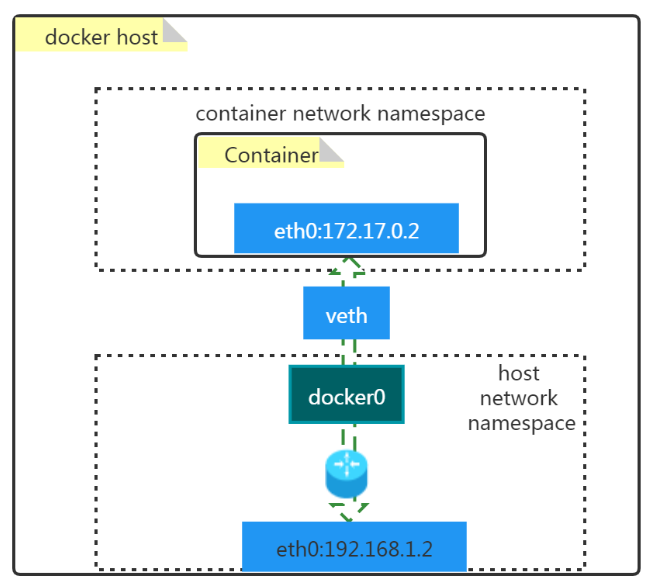
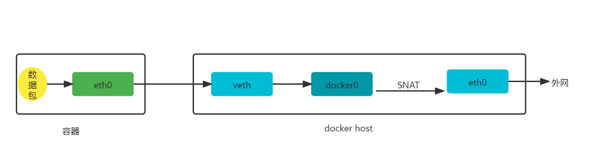
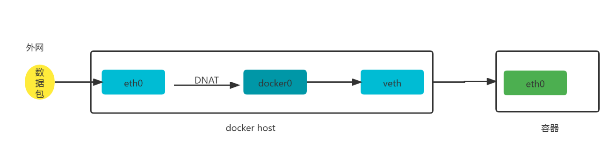
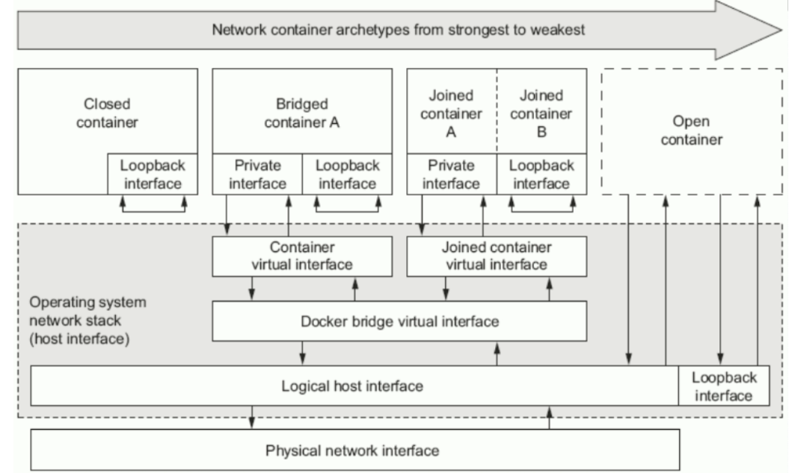
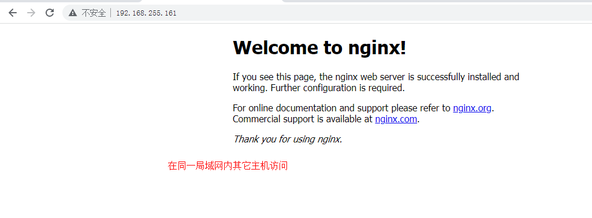
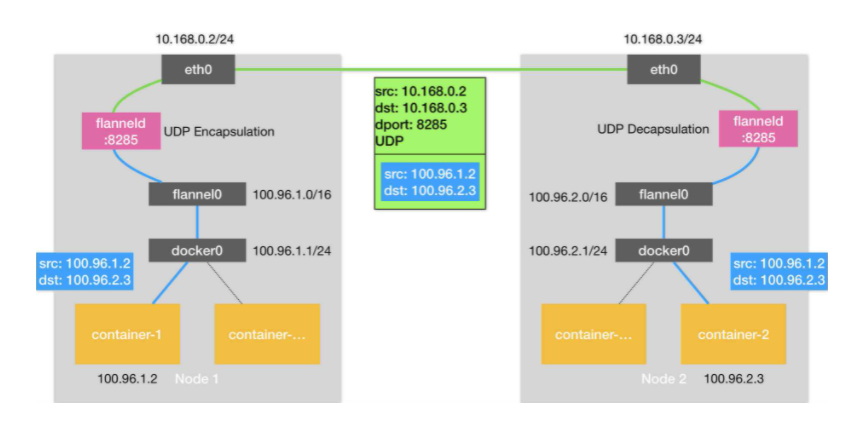

Docker容器网络与通信原理深度解析¶
一、Docker容器默认网络模型¶
1.1 原理图¶

1.2 名词解释¶
- docker0
- 是一个二层网络设备，即网桥
- 通过网桥可以将Linux支持的不同的端口连接起来
- 实现类交换机多对多的通信
- veth pair
- 虚拟以太网（Ethernet）设备
- 成对出现,用于解决网络命名空间之间的隔离
- 一端连接Container network namespace，另一端连接host network namespace
二、Docker容器默认网络模型工作原理¶
2.1 容器访问外网¶

# docker run -d --name web1 -p 8081:80 nginx:latest
# iptables -t nat -vnL POSTROUTING
输出：
Chain POSTROUTING (policy ACCEPT 7 packets, 766 bytes)
pkts bytes target prot opt in out source destination
0 0 MASQUERADE tcp -- * * 172.17.0.2 172.17.0.2 tcp dpt:80
2.2 外网访问容器¶

# iptables -t nat -vnL DOCKER
输出：
Chain DOCKER (2 references)
pkts bytes target prot opt in out source destination
0 0 DNAT tcp -- !docker0 * 0.0.0.0/0 0.0.0.0/0 tcp dpt:8081 to:172.17.0.2:80
三、Docker容器四种网络模型¶

| 模式 | 使用方法 | 说明 |
|---|---|---|
| bridge [桥接式网络(Bridge container A)] | --network bridge | 桥接容器，除了有一块本地回环接口(Loopback interface)外，还有一块私有接口(Private interface)通过容器虚拟接口(Container virtual interface)连接到桥接虚拟接口(Docker bridge virtual interface)，之后通过逻辑主机接口(Logical host interface)连接到主机物理网络(Physical network interface)。 桥接网卡默认会分配到172.17.0.0/16的IP地址段。 如果我们在创建容器时没有指定网络模型，默认就是(Nat)桥接网络，这也就是为什么我们在登录到一个容器后，发现IP地址段都在172.17.0.0/16网段的原因。 |
| host [开放式容器(Open container)] | --network host | 比联盟式网络更开放，我们知道联盟式网络是多个容器共享网络(Net),而开放式容器(Open contaner)就直接共享了宿主机的名称空间。因此物理网卡有多少个，那么该容器就能看到多少网卡信息。我们可以说Open container是联盟式容器的衍生。 |
| none [封闭式网络(Closed container)] | --network none | 封闭式容器，只有本地回环接口(Loopback interface，和咱们服务器看到的lo接口类似)，无法与外界进行通信。 |
| container [联盟式网络(Joined container A | Joined container B ] | --network container:c1(容器名称或容器ID) | 每个容器都各有一部分名称空间(Mount,PID,User)，另外一部分名称空间是共享的(UTS,Net,IPC)。 由于它们的网络是共享的，因此各个容器可以通过本地回环接口(Loopback interface)进行通信。 除了共享同一组本地回环接口(Loopback interface)外，还有一块一块私有接口(Private interface)通过联合容器虚拟接口(Joined container virtual interface)连接到桥接虚拟接口(Docker bridge virtual interface)，之后通过逻辑主机接口(Logical host interface)连接到主机物理网络(Physical network interface)。 |
四、Docker容器四种网络模型应用案例¶
4.1 查看已有的网络模型¶
查看已有的网络模型
# docker network ls
NETWORK ID NAME DRIVER SCOPE
a26c79961d8c bridge bridge local
d04ce0d0e6ca host host local
a369d8e58a41 none null local
查看已有网络模型详细信息
# docker network inspect bridge
[
{
"Name": "bridge",
"Id": "a26c79961d8c3a5f66a7de782b773291e4902badc60d0614745e01b18f506907",
"Created": "2022-02-08T11:45:25.607195911+08:00",
"Scope": "local",
"Driver": "bridge",
"EnableIPv6": false,
"IPAM": {
"Driver": "default",
"Options": null,
"Config": [
{
"Subnet": "172.17.0.0/16",
"Gateway": "172.17.0.1"
}
]
},
"Internal": false,
"Attachable": false,
"Ingress": false,
"ConfigFrom": {
"Network": ""
},
"ConfigOnly": false,
"Containers": {
"dbac5dd601b960c91bee8fafcabc0a6e6091bff14d5fccfa80ca2c74df8891ad": {
"Name": "web1",
"EndpointID": "2c1d8c66f7f46d6d76e5c384b1729a90441e1398496b3112124ba65d255432a1",
"MacAddress": "02:42:ac:11:00:02",
"IPv4Address": "172.17.0.2/16",
"IPv6Address": ""
}
},
"Options": {
"com.docker.network.bridge.default_bridge": "true",
"com.docker.network.bridge.enable_icc": "true",
"com.docker.network.bridge.enable_ip_masquerade": "true",
"com.docker.network.bridge.host_binding_ipv4": "0.0.0.0",
"com.docker.network.bridge.name": "docker0",
"com.docker.network.driver.mtu": "1500"
},
"Labels": {}
}
]
查看docker支持的网络模型
# docker info | grep Network
Network: bridge host ipvlan macvlan null overlay
4.2 创建指定类型的网络模型¶
4.2.1 bridge¶
查看创建网络模型的帮助方法
# docker network create --help
创建一个名称为mybr0的网络
# docker network create -d bridge --subnet "192.168.100.0/24" --gateway "192.168.100.1" -o com.docker.network.bridge.name=docker1 mybr0
查看已创建网络
# docker network ls
NETWORK ID NAME DRIVER SCOPE
......
a6a1ad36c3c0 mybr0 bridge local
......
在docker host主机上可以看到多了一个网桥docker1
# ifconfig
docker1: flags=4099<UP,BROADCAST,MULTICAST> mtu 1500
inet 192.168.100.1 netmask 255.255.255.0 broadcast 192.168.100.255
ether 02:42:14:aa:f5:04 txqueuelen 0 (Ethernet)
RX packets 0 bytes 0 (0.0 B)
RX errors 0 dropped 0 overruns 0 frame 0
TX packets 20 bytes 1598 (1.5 KiB)
TX errors 0 dropped 0 overruns 0 carrier 0 collisions 0
启动一个容器并连接到已创建mybr0网络
# docker run -it --network mybr0 --rm busybox
/ # ifconfig
eth0 Link encap:Ethernet HWaddr 02:42:C0:A8:65:02
inet addr:192.168.100.2 Bcast:192.168.100.255 Mask:255.255.255.0
UP BROADCAST RUNNING MULTICAST MTU:1500 Metric:1
RX packets:18 errors:0 dropped:0 overruns:0 frame:0
TX packets:0 errors:0 dropped:0 overruns:0 carrier:0
collisions:0 txqueuelen:0
RX bytes:2185 (2.1 KiB) TX bytes:0 (0.0 B)
lo Link encap:Local Loopback
inet addr:127.0.0.1 Mask:255.0.0.0
UP LOOPBACK RUNNING MTU:65536 Metric:1
RX packets:0 errors:0 dropped:0 overruns:0 frame:0
TX packets:0 errors:0 dropped:0 overruns:0 carrier:0
collisions:0 txqueuelen:1000
RX bytes:0 (0.0 B) TX bytes:0 (0.0 B)
/ # exit
4.2.2 host¶
查看host类型的网络模型
# docker network ls
NETWORK ID NAME DRIVER SCOPE
......
d04ce0d0e6ca host host local
......
查看host网络模型的详细信息
# docker network inspect host
[
{
"Name": "host",
"Id": "d04ce0d0e6ca8e6226937f19033ef2c3f05b47ed63e06492d5c3071904fbb80b",
"Created": "2022-01-21T16:12:05.30970114+08:00",
"Scope": "local",
"Driver": "host",
"EnableIPv6": false,
"IPAM": {
"Driver": "default",
"Options": null,
"Config": []
},
"Internal": false,
"Attachable": false,
"Ingress": false,
"ConfigFrom": {
"Network": ""
},
"ConfigOnly": false,
"Containers": {},
"Options": {},
"Labels": {}
}
]
创建容器使用host网络模型，并查看其网络信息
# docker run -it --network host --rm busybox
/ # ifconfig
docker0 Link encap:Ethernet HWaddr 02:42:11:B8:9A:C5
inet addr:172.17.0.1 Bcast:172.17.255.255 Mask:255.255.0.0
inet6 addr: fe80::42:11ff:feb8:9ac5/64 Scope:Link
UP BROADCAST MULTICAST MTU:1500 Metric:1
RX packets:53 errors:0 dropped:0 overruns:0 frame:0
TX packets:94 errors:0 dropped:0 overruns:0 carrier:0
collisions:0 txqueuelen:0
RX bytes:6924 (6.7 KiB) TX bytes:7868 (7.6 KiB)
docker1 Link encap:Ethernet HWaddr 02:42:14:AA:F5:04
inet addr:192.168.100.1 Bcast:192.168.100.255 Mask:255.255.255.0
UP BROADCAST MULTICAST MTU:1500 Metric:1
RX packets:0 errors:0 dropped:0 overruns:0 frame:0
TX packets:0 errors:0 dropped:0 overruns:0 carrier:0
collisions:0 txqueuelen:0
RX bytes:0 (0.0 B) TX bytes:0 (0.0 B)
ens33 Link encap:Ethernet HWaddr 00:0C:29:AF:89:0B
inet addr:192.168.255.161 Bcast:192.168.255.255 Mask:255.255.255.0
inet6 addr: fe80::44fc:2662:bfab:2b93/64 Scope:Link
UP BROADCAST RUNNING MULTICAST MTU:1500 Metric:1
RX packets:157763 errors:0 dropped:0 overruns:0 frame:0
TX packets:50865 errors:0 dropped:0 overruns:0 carrier:0
collisions:0 txqueuelen:1000
RX bytes:205504721 (195.9 MiB) TX bytes:3626119 (3.4 MiB)
lo Link encap:Local Loopback
inet addr:127.0.0.1 Mask:255.0.0.0
inet6 addr: ::1/128 Scope:Host
UP LOOPBACK RUNNING MTU:65536 Metric:1
RX packets:88 errors:0 dropped:0 overruns:0 frame:0
TX packets:88 errors:0 dropped:0 overruns:0 carrier:0
collisions:0 txqueuelen:1000
RX bytes:8196 (8.0 KiB) TX bytes:8196 (8.0 KiB)
virbr0 Link encap:Ethernet HWaddr 52:54:00:EB:01:E5
inet addr:192.168.122.1 Bcast:192.168.122.255 Mask:255.255.255.0
UP BROADCAST MULTICAST MTU:1500 Metric:1
RX packets:0 errors:0 dropped:0 overruns:0 frame:0
TX packets:0 errors:0 dropped:0 overruns:0 carrier:0
collisions:0 txqueuelen:1000
RX bytes:0 (0.0 B) TX bytes:0 (0.0 B)
/ # exit
运行Nginx服务
创建用于运行nginx应用的容器，使用host网络模型
# docker run -d --network host nginx:latest
查看容器运行状态
# docker ps
CONTAINER ID IMAGE COMMAND CREATED STATUS PORTS NAMES
f6677b213271 nginx:latest "/docker-entrypoint.…" 7 seconds ago Up 6 seconds youthful_shtern
查看docker host 80端口状态
# ss -anput | grep ":80"
tcp LISTEN 0 511 *:80 *:* users:(("nginx",pid=42866,fd=7),("nginx",pid=42826,fd=7))
tcp LISTEN 0 511 :::80 :::* users:(("nginx",pid=42866,fd=8),("nginx",pid=42826,fd=8))
使用curl命令访问docker host主机IP地址，验证是否可以对nginx进行访问，如可访问，则说明容器与docker host共享网络命名空间
# curl http://192.168.255.161
<!DOCTYPE html>
<html>
<head>
<title>Welcome to nginx!</title>
<style>
html { color-scheme: light dark; }
body { width: 35em; margin: 0 auto;
font-family: Tahoma, Verdana, Arial, sans-serif; }
</style>
</head>
<body>
<h1>Welcome to nginx!</h1>
<p>If you see this page, the nginx web server is successfully installed and
working. Further configuration is required.</p>
<p>For online documentation and support please refer to
<a href="http://nginx.org/">nginx.org</a>.<br/>
Commercial support is available at
<a href="http://nginx.com/">nginx.com</a>.</p>
<p><em>Thank you for using nginx.</em></p>
</body>
</html>

4.2.3 none¶
查看none类型的网络模型
# docker network ls
NETWORK ID NAME DRIVER SCOPE
......
a369d8e58a41 none null local
查看none网络模型详细信息
# docker network inspect none
[
{
"Name": "none",
"Id": "a369d8e58a41ce2e3c25f2273b059e984dd561bfa7e79077a0cce9b3a925b9c9",
"Created": "2022-01-21T16:12:05.217801814+08:00",
"Scope": "local",
"Driver": "null",
"EnableIPv6": false,
"IPAM": {
"Driver": "default",
"Options": null,
"Config": []
},
"Internal": false,
"Attachable": false,
"Ingress": false,
"ConfigFrom": {
"Network": ""
},
"ConfigOnly": false,
"Containers": {},
"Options": {},
"Labels": {}
}
]
创建容器使用none网络模型，并查看其网络状态
# docker run -it --network none --rm busybox:latest
/ # ifconfig
lo Link encap:Local Loopback
inet addr:127.0.0.1 Mask:255.0.0.0
UP LOOPBACK RUNNING MTU:65536 Metric:1
RX packets:0 errors:0 dropped:0 overruns:0 frame:0
TX packets:0 errors:0 dropped:0 overruns:0 carrier:0
collisions:0 txqueuelen:1000
RX bytes:0 (0.0 B) TX bytes:0 (0.0 B)
/ # exit
4.2.4 联盟网络¶
创建c1容器，使用默认网络模型
# docker run -it --name c1 --rm busybox:latest
/ # ifconfig
eth0 Link encap:Ethernet HWaddr 02:42:AC:11:00:02
inet addr:172.17.0.2 Bcast:172.17.255.255 Mask:255.255.0.0
UP BROADCAST RUNNING MULTICAST MTU:1500 Metric:1
RX packets:16 errors:0 dropped:0 overruns:0 frame:0
TX packets:0 errors:0 dropped:0 overruns:0 carrier:0
collisions:0 txqueuelen:0
RX bytes:1916 (1.8 KiB) TX bytes:0 (0.0 B)
lo Link encap:Local Loopback
inet addr:127.0.0.1 Mask:255.0.0.0
UP LOOPBACK RUNNING MTU:65536 Metric:1
RX packets:0 errors:0 dropped:0 overruns:0 frame:0
TX packets:0 errors:0 dropped:0 overruns:0 carrier:0
collisions:0 txqueuelen:1000
RX bytes:0 (0.0 B) TX bytes:0 (0.0 B)
查看c1容器状态
# docker ps
CONTAINER ID IMAGE COMMAND CREATED STATUS PORTS NAMES
0905bc8ebfb6 busybox:latest "sh" 13 seconds ago Up 11 seconds c1
创建c2容器，与c1容器共享网络命名空间
# docker run -it --name c2 --network container:c1 --rm busybox:latest
/ # ifconfig
eth0 Link encap:Ethernet HWaddr 02:42:AC:11:00:02
inet addr:172.17.0.2 Bcast:172.17.255.255 Mask:255.255.0.0
UP BROADCAST RUNNING MULTICAST MTU:1500 Metric:1
RX packets:22 errors:0 dropped:0 overruns:0 frame:0
TX packets:0 errors:0 dropped:0 overruns:0 carrier:0
collisions:0 txqueuelen:0
RX bytes:2574 (2.5 KiB) TX bytes:0 (0.0 B)
lo Link encap:Local Loopback
inet addr:127.0.0.1 Mask:255.0.0.0
UP LOOPBACK RUNNING MTU:65536 Metric:1
RX packets:0 errors:0 dropped:0 overruns:0 frame:0
TX packets:0 errors:0 dropped:0 overruns:0 carrier:0
collisions:0 txqueuelen:1000
RX bytes:0 (0.0 B) TX bytes:0 (0.0 B)
在c2容器中创建文件并开启httpd服务
/ # echo "hello world" >> /tmp/index.html
/ # ls /tmp
index.html
/ # httpd -h /tmp
验证80端口是否打开
/ # netstat -npl
Active Internet connections (only servers)
Proto Recv-Q Send-Q Local Address Foreign Address State PID/Program name
tcp 0 0 :::80 :::* LISTEN 10/httpd
在c1容器中进行访问验证
# docker exec c1 wget -O - -q 127.0.0.1
hello world
查看c1容器/tmp目录，发现没有在c2容器中创建的文件，说明c1与c2仅共享了网络命名空间，没有共享文件系统
# docker exec c1 ls /tmp
五、跨Docker Host容器间通信实现¶
5.1 跨Docker Host容器间通信必要性¶
- 由于Docker容器运行的环境类似于在局域网中运行服务一样，无法直接被外界访问，如果采用在Docker Host利用端口映射方式会导致端口被严重消耗。
- 能够实现不同的Docker Host方便访问其它Docker Host之上的容器提供的服务
5.2 跨Docker Host容器间通信实现方案¶
5.2.1 Docker原生方案¶
- overlay
- 基于VXLAN封装实现Docker原生overlay网络
- macvlan
- Docker主机网卡接口逻辑上分为多个子接口，每个子接口标识一个VLAN，容器接口直接连接Docker Host
- 网卡接口
- 通过路由策略转发到另一台Docker Host
5.2.2 第三方方案¶
5.2.2.1 隧道方案¶
- Flannel
- 支持UDP和VLAN封装传输方式
- Weave
- 支持UDP和VXLAN
- OpenvSwitch
- 支持VXLAN和GRE协议
5.2.2.2 路由方案¶
- Calico
- 支持BGP协议和IPIP隧道
- 每台宿主机作为虚拟路由，通过BGP协议实现不同主机容器间通信。
5.3 Flannel¶
5.3.1 overlay network介绍¶
Overlay网络是指在不改变现有网络基础设施的前提下，通过某种约定通信协议，把二层报文封装在IP报文之上的新的数据格式。这样不但能够充分利用成熟的IP路由协议进程数据分发；而且在Overlay技术中采用扩展的隔离标识位数，能够突破VLAN的4000数量限制支持高达16M的用户，并在必要时可将广播流量转化为组播流量，避免广播数据泛滥。
因此，Overlay网络实际上是目前最主流的容器跨节点数据传输和路由方案。
5.3.2 Flannel介绍¶
Flannel是 CoreOS 团队针对 Kubernetes 设计的一个覆盖网络（Overlay Network）工具，其目的在于帮助每一个使用 Kuberentes 的 CoreOS 主机拥有一个完整的子网。 Flannel通过给每台宿主机分配一个子网的方式为容器提供虚拟网络，它基于Linux TUN/TAP，使用UDP封装IP包来创建overlay网络，并借助etcd维护网络的分配情况。 Flannel is a simple and easy way to configure a layer 3 network fabric designed for Kubernetes.
5.3.3 Flannel工作原理¶
Flannel是CoreOS团队针对Kubernetes设计的一个网络规划服务，简单来说，它的功能是让集群中的不同节点主机创建的Docker容器都具有全集群唯一的虚拟IP地址。但在默认的Docker配置中，每个Node的Docker服务会分别负责所在节点容器的IP分配。Node内部的容器之间可以相互访问,但是跨主机(Node)网络相互间是不能通信。Flannel设计目的就是为集群中所有节点重新规划IP地址的使用规则，从而使得不同节点上的容器能够获得"同属一个内网"且"不重复的"IP地址，并让属于不同节点上的容器能够直接通过内网IP通信。 Flannel 使用etcd存储配置数据和子网分配信息。flannel 启动之后，后台进程首先检索配置和正在使用的子网列表，然后选择一个可用的子网，然后尝试去注册它。etcd也存储这个每个主机对应的ip。flannel 使用etcd的watch机制监视/coreos.com/network/subnets下面所有元素的变化信息，并且根据它来维护一个路由表。为了提高性能，flannel优化了Universal TAP/TUN设备，对TUN和UDP之间的ip分片做了代理。 如下原理图：

1、数据从源容器中发出后，经由所在主机的docker0虚拟网卡转发到flannel0虚拟网卡，这是个P2P的虚拟网卡，flanneld服务监听在网卡的另外一端。
2、Flannel通过Etcd服务维护了一张节点间的路由表，该张表里保存了各个节点主机的子网网段信息。
3、源主机的flanneld服务将原本的数据内容UDP封装后根据自己的路由表投递给目的节点的flanneld服务，数据到达以后被解包，然后直接进入目的节点的flannel0虚拟网卡，然后被转发到目的主机的docker0虚拟网卡，最后就像本机容器通信一样的由docker0路由到达目标容器。
5.4 ETCD¶
etcd是CoreOS团队于2013年6月发起的开源项目，它的目标是构建一个高可用的分布式键值(key-value)数据库。etcd内部采用raft协议作为一致性算法，etcd基于Go语言实现。
etcd作为服务发现系统，特点：
- 简单：安装配置简单，而且提供了HTTP API进行交互，使用也很简单
- 安全：支持SSL证书验证
- 快速：根据官方提供的benchmark数据，单实例支持每秒2k+读操作
- 可靠：采用raft算法，实现分布式系统数据的可用性和一致性
5.5 ETCD部署¶
主机防火墙及SELINUX均关闭。
5.5.1 主机名称配置¶
# hostnamectl set-hostname node1
# hostnamectl set-hostname node2
5.5.2 主机IP地址配置¶
# vim /etc/sysconfig/network-scripts/ifcfg-ens33
# cat /etc/sysconfig/network-scripts/ifcfg-ens33
TYPE="Ethernet"
PROXY_METHOD="none"
BROWSER_ONLY="no"
BOOTPROTO="none"
DEFROUTE="yes"
IPV4_FAILURE_FATAL="no"
IPV6INIT="yes"
IPV6_AUTOCONF="yes"
IPV6_DEFROUTE="yes"
IPV6_FAILURE_FATAL="no"
IPV6_ADDR_GEN_MODE="stable-privacy"
NAME="ens33"
UUID="6c020cf7-4c6e-4276-9aa6-0661670da705"
DEVICE="ens33"
ONBOOT="yes"
IPADDR="192.168.255.154"
PREFIX="24"
GATEWAY="192.168.255.2"
DNS1="119.29.29.29"
# vim /etc/sysconfig/network-scripts/ifcfg-ens33
# cat /etc/sysconfig/network-scripts/ifcfg-ens33
TYPE="Ethernet"
PROXY_METHOD="none"
BROWSER_ONLY="no"
BOOTPROTO="none"
DEFROUTE="yes"
IPV4_FAILURE_FATAL="no"
IPV6INIT="yes"
IPV6_AUTOCONF="yes"
IPV6_DEFROUTE="yes"
IPV6_FAILURE_FATAL="no"
IPV6_ADDR_GEN_MODE="stable-privacy"
NAME="ens33"
UUID="6c020cf7-4c6e-4276-9aa6-0661670da705"
DEVICE="ens33"
ONBOOT="yes"
IPADDR="192.168.255.155"
PREFIX="24"
GATEWAY="192.168.255.2"
DNS1="119.29.29.29"
5.5.3 主机名与IP地址解析¶
# vim /etc/hosts
[root@node1 ~]# cat /etc/hosts
127.0.0.1 localhost localhost.localdomain localhost4 localhost4.localdomain4
::1 localhost localhost.localdomain localhost6 localhost6.localdomain6
192.168.255.154 node1
192.168.255.155 node2
# vim /etc/hosts
[root@node2 ~]# cat /etc/hosts
127.0.0.1 localhost localhost.localdomain localhost4 localhost4.localdomain4
::1 localhost localhost.localdomain localhost6 localhost6.localdomain6
192.168.255.154 node1
192.168.255.155 node2
5.5.4 开启内核转发¶
所有Docker Host
# vim /etc/sysctl.conf
[root@node1 ~]# cat /etc/sysctl.conf
......
net.ipv4.ip_forward=1
# sysctl -p
# vim /etc/sysctl.conf
[root@node2 ~]# cat /etc/sysctl.conf
......
net.ipv4.ip_forward=1
# sysctl -p
5.5.5 etcd安装¶
etcd集群
[root@node1 ~]# yum -y install etcd
[root@node2 ~]# yum -y install etcd
5.5.6 etcd配置¶
# vim /etc/etcd/etcd.conf
[root@node1 ~]# cat /etc/etcd/etcd.conf
#[Member]
#ETCD_CORS=""
ETCD_DATA_DIR="/var/lib/etcd/node1.etcd"
#ETCD_WAL_DIR=""
ETCD_LISTEN_PEER_URLS="http://0.0.0.0:2380"
ETCD_LISTEN_CLIENT_URLS="http://0.0.0.0:2379,http://0.0.0.0:4001"
#ETCD_MAX_SNAPSHOTS="5"
#ETCD_MAX_WALS="5"
ETCD_NAME="node1"
#ETCD_SNAPSHOT_COUNT="100000"
#ETCD_HEARTBEAT_INTERVAL="100"
#ETCD_ELECTION_TIMEOUT="1000"
#ETCD_QUOTA_BACKEND_BYTES="0"
#ETCD_MAX_REQUEST_BYTES="1572864"
#ETCD_GRPC_KEEPALIVE_MIN_TIME="5s"
#ETCD_GRPC_KEEPALIVE_INTERVAL="2h0m0s"
#ETCD_GRPC_KEEPALIVE_TIMEOUT="20s"
#
#[Clustering]
ETCD_INITIAL_ADVERTISE_PEER_URLS="http://192.168.255.154:2380"
ETCD_ADVERTISE_CLIENT_URLS="http://192.168.255.154:2379,http://192.168.255.155:4001"
#ETCD_DISCOVERY=""
#ETCD_DISCOVERY_FALLBACK="proxy"
#ETCD_DISCOVERY_PROXY=""
#ETCD_DISCOVERY_SRV=""
ETCD_INITIAL_CLUSTER="node1=http://192.168.255.154:2380,node2=http://192.168.255.155:2380"
#ETCD_INITIAL_CLUSTER_TOKEN="etcd-cluster"
#ETCD_INITIAL_CLUSTER_STATE="new"
#ETCD_STRICT_RECONFIG_CHECK="true"
#ETCD_ENABLE_V2="true"
#
#[Proxy]
# vim /etc/etcd/etcd.conf
[root@node2 ~]# cat /etc/etcd/etcd.conf
#[Member]
#ETCD_CORS=""
ETCD_DATA_DIR="/var/lib/etcd/node2.etcd"
#ETCD_WAL_DIR=""
ETCD_LISTEN_PEER_URLS="http://0.0.0.0:2380"
ETCD_LISTEN_CLIENT_URLS="http://0.0.0.0:2379,http://0.0.0.0:4001"
#ETCD_MAX_SNAPSHOTS="5"
#ETCD_MAX_WALS="5"
ETCD_NAME="node2"
#ETCD_SNAPSHOT_COUNT="100000"
#ETCD_HEARTBEAT_INTERVAL="100"
#ETCD_ELECTION_TIMEOUT="1000"
#ETCD_QUOTA_BACKEND_BYTES="0"
#ETCD_MAX_REQUEST_BYTES="1572864"
#ETCD_GRPC_KEEPALIVE_MIN_TIME="5s"
#ETCD_GRPC_KEEPALIVE_INTERVAL="2h0m0s"
#ETCD_GRPC_KEEPALIVE_TIMEOUT="20s"
#
#[Clustering]
ETCD_INITIAL_ADVERTISE_PEER_URLS="http://192.168.255.155:2380"
ETCD_ADVERTISE_CLIENT_URLS="http://192.168.255.155:2379,http://192.168.255.155:4001"
#ETCD_DISCOVERY=""
#ETCD_DISCOVERY_FALLBACK="proxy"
#ETCD_DISCOVERY_PROXY=""
#ETCD_DISCOVERY_SRV=""
ETCD_INITIAL_CLUSTER="node1=http://192.168.255.154:2380,node2=http://192.168.255.155:2380"
#ETCD_INITIAL_CLUSTER_TOKEN="etcd-cluster"
#ETCD_INITIAL_CLUSTER_STATE="new"
#ETCD_STRICT_RECONFIG_CHECK="true"
#ETCD_ENABLE_V2="true"
#
#[Proxy]
5.5.7 启动etcd服务¶
[root@node1 ~]# systemctl enable etcd
[root@node1 ~]# systemctl start etcd
[root@node2 ~]# systemctl enable etcd
[root@node2 ~]# systemctl start etcd
5.5.8 检查端口状态¶
# netstat -tnlp | grep -E "4001|2380"
输出结果：
tcp6 0 0 :::2380 :::* LISTEN 65318/etcd
tcp6 0 0 :::4001 :::* LISTEN 65318/etcd
5.5.9 检查etcd集群是否健康¶
# etcdctl -C http://192.168.255.154:2379 cluster-health
输出：
member 5be09658727c5574 is healthy: got healthy result from http://192.168.255.154:2379
member c48e6c7a65e5ca43 is healthy: got healthy result from http://192.168.255.155:2379
cluster is healthy
# etcdctl member list
输出：
5be09658727c5574: name=node1 peerURLs=http://192.168.255.154:2380 clientURLs=http://192.168.255.154:2379,http://192.168.255.155:4001 isLeader=true
c48e6c7a65e5ca43: name=node2 peerURLs=http://192.168.255.155:2380 clientURLs=http://192.168.255.155:2379,http://192.168.255.155:4001 isLeader=false
5.6 Flannel部署¶
5.6.1 Flannel安装¶
[root@node1 ~]# yum -y install flannel
[root@node2 ~]# yum -y install flannel
5.6.2 修改Flannel配置文件¶
[root@node1 ~]# vim /etc/sysconfig/flanneld
[root@node1 ~]# cat /etc/sysconfig/flanneld
# Flanneld configuration options
# etcd url location. Point this to the server where etcd runs
FLANNEL_ETCD_ENDPOINTS="http://192.168.255.154:2379,http://192.168.255.155:2379"
# etcd config key. This is the configuration key that flannel queries
# For address range assignment
FLANNEL_ETCD_PREFIX="/atomic.io/network"
# Any additional options that you want to pass
#FLANNEL_OPTIONS=""
FLANNEL_OPTIONS="--logtostderr=false --log_dir=/var/log/ --etcd endpoints=http://192.168.255.154:2379,http://192.168.255.155:2379 --iface=ens33"
[root@node2 ~]# vim /etc/sysconfig/flanneld
[root@node2 ~]# cat /etc/sysconfig/flanneld
# Flanneld configuration options
# etcd url location. Point this to the server where etcd runs
FLANNEL_ETCD_ENDPOINTS="http://192.168.255.154:2379,http://192.168.255.155:2379"
# etcd config key. This is the configuration key that flannel queries
# For address range assignment
FLANNEL_ETCD_PREFIX="/atomic.io/network"
# Any additional options that you want to pass
#FLANNEL_OPTIONS=""
FLANNEL_OPTIONS="--logtostderr=false --log_dir=/var/log/ --etcd-endpoints=http://192.168.255.154:2379,http://192.168.255.155:2379 --iface=ens33"
5.6.3 配置etcd中关于flannel的key¶
Flannel使用Etcd进行配置，来保证多个Flannel实例之间的配置一致性，所以需要在etcd上进行如下配置（'/http://atomic.io/network/config'这个key与上面的/etc/sysconfig/flannel中的配置项FLANNEL_ETCD_PREFIX是相对应的，错误的话启动就会出错）
该ip网段可以任意设定，随便设定一个网段都可以。容器的ip就是根据这个网段进行自动分配的，ip分配后，容器一般是可以对外联网的（网桥模式，只要Docker Host能上网即可。）
[root@node1 ~]# etcdctl mk /atomic.io/network/config '{"Network":"172.21.0.0/16"}'
{"Network":"172.21.0.0/16"}
或
[root@node1 ~]# etcdctl set /atomic.io/network/config '{"Network":"172.21.0.0/16"}'
{"Network":"172.21.0.0/16"}
[root@node1 ~]# etcdctl get /atomic.io/network/config
{"Network":"172.21.0.0/16"}
5.6.4 启动Flannel服务¶
[root@node1 ~]# systemctl enable flanneld;systemctl start flanneld
[root@node2 ~]# systemctl enable flanneld;systemctl start flanneld
5.6.5 查看各node中flannel产生的配置信息¶
[root@node1 ~]# ls /run/flannel/
docker subnet.env
[root@node1 ~]# cat /run/flannel/subnet.env
FLANNEL_NETWORK=172.21.0.0/16
FLANNEL_SUBNET=172.21.31.1/24
FLANNEL_MTU=1472
FLANNEL_IPMASQ=false
[root@node1 ~]# ip a s
......
5: docker0: <NO-CARRIER,BROADCAST,MULTICAST,UP> mtu 1500 qdisc noqueue state DOWN group default
link/ether 02:42:63:d1:9e:0b brd ff:ff:ff:ff:ff:ff
inet 172.17.0.1/16 brd 172.17.255.255 scope global docker0
valid_lft forever preferred_lft forever
6: flannel0: <POINTOPOINT,MULTICAST,NOARP,UP,LOWER_UP> mtu 1472 qdisc pfifo_fast state UNKNOWN group default qlen 500
link/none
inet 172.21.31.0/16 scope global flannel0
valid_lft forever preferred_lft forever
inet6 fe80::edfa:d8b0:3351:4126/64 scope link flags 800
valid_lft forever preferred_lft forever
[root@node2 ~]# ls /run/flannel/
docker subnet.env
[root@node2 ~]# cat /run/flannel/subnet.env
FLANNEL_NETWORK=172.21.0.0/16
FLANNEL_SUBNET=172.21.55.1/24
FLANNEL_MTU=1472
FLANNEL_IPMASQ=false
[root@node2 ~]# ip a s
......
5: docker0: <NO-CARRIER,BROADCAST,MULTICAST,UP> mtu 1500 qdisc noqueue state DOWN group default
link/ether 02:42:e1:16:68:de brd ff:ff:ff:ff:ff:ff
inet 172.17.0.1/16 brd 172.17.255.255 scope global docker0
valid_lft forever preferred_lft forever
6: flannel0: <POINTOPOINT,MULTICAST,NOARP,UP,LOWER_UP> mtu 1472 qdisc pfifo_fast state UNKNOWN group default qlen 500
link/none
inet 172.21.55.0/16 scope global flannel0
valid_lft forever preferred_lft forever
inet6 fe80::f895:9b5a:92b1:78aa/64 scope link flags 800
valid_lft forever preferred_lft forever
5.7 Docker网络配置¶
--bip=172.21.31.1/24 --ip-masq=true --mtu=1472 放置于启动程序后
[root@node1 ~]# vim /usr/lib/systemd/system/docker.service
[root@node1 ~]# cat /usr/lib/systemd/system/docker.service
[Unit]
Description=Docker Application Container Engine
Documentation=https://docs.docker.com
After=network-online.target firewalld.service containerd.service
Wants=network-online.target
Requires=docker.socket containerd.service
[Service]
Type=notify
# the default is not to use systemd for cgroups because the delegate issues still
# exists and systemd currently does not support the cgroup feature set required
# for containers run by docker
ExecStart=/usr/bin/dockerd -H fd:// --containerd=/run/containerd/containerd.sock --bip=172.21.31.1/24 --ip-masq=true --mtu=1472
ExecReload=/bin/kill -s HUP $MAINPID
TimeoutSec=0
RestartSec=2
Restart=always
# Note that StartLimit* options were moved from "Service" to "Unit" in systemd 229.
# Both the old, and new location are accepted by systemd 229 and up, so using the old location
# to make them work for either version of systemd.
StartLimitBurst=3
# Note that StartLimitInterval was renamed to StartLimitIntervalSec in systemd 230.
# Both the old, and new name are accepted by systemd 230 and up, so using the old name to make
# this option work for either version of systemd.
StartLimitInterval=60s
# Having non-zero Limit*s causes performance problems due to accounting overhead
# in the kernel. We recommend using cgroups to do container-local accounting.
LimitNOFILE=infinity
LimitNPROC=infinity
LimitCORE=infinity
# Comment TasksMax if your systemd version does not support it.
# Only systemd 226 and above support this option.
TasksMax=infinity
# set delegate yes so that systemd does not reset the cgroups of docker containers
Delegate=yes
# kill only the docker process, not all processes in the cgroup
KillMode=process
OOMScoreAdjust=-500
[Install]
WantedBy=multi-user.target
[root@node2 ~]# vim /usr/lib/systemd/system/docker.service
[root@node2 ~]# cat /usr/lib/systemd/system/docker.service
[Unit]
Description=Docker Application Container Engine
Documentation=https://docs.docker.com
After=network-online.target firewalld.service containerd.service
Wants=network-online.target
Requires=docker.socket containerd.service
[Service]
Type=notify
# the default is not to use systemd for cgroups because the delegate issues still
# exists and systemd currently does not support the cgroup feature set required
# for containers run by docker
ExecStart=/usr/bin/dockerd -H fd:// --containerd=/run/containerd/containerd.sock --bip=172.21.55.1/24 --ip-masq=true --mtu=1472
ExecReload=/bin/kill -s HUP $MAINPID
TimeoutSec=0
RestartSec=2
Restart=always
# Note that StartLimit* options were moved from "Service" to "Unit" in systemd 229.
# Both the old, and new location are accepted by systemd 229 and up, so using the old location
# to make them work for either version of systemd.
StartLimitBurst=3
# Note that StartLimitInterval was renamed to StartLimitIntervalSec in systemd 230.
# Both the old, and new name are accepted by systemd 230 and up, so using the old name to make
# this option work for either version of systemd.
StartLimitInterval=60s
# Having non-zero Limit*s causes performance problems due to accounting overhead
# in the kernel. We recommend using cgroups to do container-local accounting.
LimitNOFILE=infinity
LimitNPROC=infinity
LimitCORE=infinity
# Comment TasksMax if your systemd version does not support it.
# Only systemd 226 and above support this option.
TasksMax=infinity
# set delegate yes so that systemd does not reset the cgroups of docker containers
Delegate=yes
# kill only the docker process, not all processes in the cgroup
KillMode=process
OOMScoreAdjust=-500
[Install]
WantedBy=multi-user.target
[root@node1 ~]# systemctl daemon-reload
[root@node1 ~]# systemctl restart docker
[root@node1 ~]# ip a s
......
5: docker0: <NO-CARRIER,BROADCAST,MULTICAST,UP> mtu 1500 qdisc noqueue state DOWN group default
link/ether 02:42:63:d1:9e:0b brd ff:ff:ff:ff:ff:ff
inet 172.21.31.1/24 brd 172.21.31.255 scope global docker0
valid_lft forever preferred_lft forever
6: flannel0: <POINTOPOINT,MULTICAST,NOARP,UP,LOWER_UP> mtu 1472 qdisc pfifo_fast state UNKNOWN group default qlen 500
link/none
inet 172.21.31.0/16 scope global flannel0
valid_lft forever preferred_lft forever
inet6 fe80::edfa:d8b0:3351:4126/64 scope link flags 800
valid_lft forever preferred_lft forever
[root@node2 ~]# systemctl daemon-reload
[root@node2 ~]# systemctl restart docker
[root@node2 ~]# ip a s
......
5: docker0: <NO-CARRIER,BROADCAST,MULTICAST,UP> mtu 1500 qdisc noqueue state DOWN group default
link/ether 02:42:e1:16:68:de brd ff:ff:ff:ff:ff:ff
inet 172.21.55.1/24 brd 172.21.55.255 scope global docker0
valid_lft forever preferred_lft forever
6: flannel0: <POINTOPOINT,MULTICAST,NOARP,UP,LOWER_UP> mtu 1472 qdisc pfifo_fast state UNKNOWN group default qlen 500
link/none
inet 172.21.55.0/16 scope global flannel0
valid_lft forever preferred_lft forever
inet6 fe80::f895:9b5a:92b1:78aa/64 scope link flags 800
valid_lft forever preferred_lft forever
5.8 跨Docker Host容器间通信验证¶
[root@node1 ~]# docker run -it --rm busybox:latest
/ # ifconfig
eth0 Link encap:Ethernet HWaddr 02:42:AC:15:1F:02
inet addr:172.21.31.2 Bcast:172.21.31.255 Mask:255.255.255.0
UP BROADCAST RUNNING MULTICAST MTU:1472 Metric:1
RX packets:21 errors:0 dropped:0 overruns:0 frame:0
TX packets:0 errors:0 dropped:0 overruns:0 carrier:0
collisions:0 txqueuelen:0
RX bytes:2424 (2.3 KiB) TX bytes:0 (0.0 B)
lo Link encap:Local Loopback
inet addr:127.0.0.1 Mask:255.0.0.0
UP LOOPBACK RUNNING MTU:65536 Metric:1
RX packets:0 errors:0 dropped:0 overruns:0 frame:0
TX packets:0 errors:0 dropped:0 overruns:0 carrier:0
collisions:0 txqueuelen:1000
RX bytes:0 (0.0 B) TX bytes:0 (0.0 B)
/ # ping 172.21.55.2
PING 172.21.55.2 (172.21.55.2): 56 data bytes
64 bytes from 172.21.55.2: seq=0 ttl=60 time=2.141 ms
64 bytes from 172.21.55.2: seq=1 ttl=60 time=1.219 ms
64 bytes from 172.21.55.2: seq=2 ttl=60 time=0.730 ms
^C
--- 172.21.55.2 ping statistics ---
3 packets transmitted, 3 packets received, 0% packet loss
round-trip min/avg/max = 0.730/1.363/2.141 ms
[root@node2 ~]# docker run -it --rm busybox:latest
/ # ifconfig
eth0 Link encap:Ethernet HWaddr 02:42:AC:15:37:02
inet addr:172.21.55.2 Bcast:172.21.55.255 Mask:255.255.255.0
UP BROADCAST RUNNING MULTICAST MTU:1472 Metric:1
RX packets:19 errors:0 dropped:0 overruns:0 frame:0
TX packets:0 errors:0 dropped:0 overruns:0 carrier:0
collisions:0 txqueuelen:0
RX bytes:2246 (2.1 KiB) TX bytes:0 (0.0 B)
lo Link encap:Local Loopback
inet addr:127.0.0.1 Mask:255.0.0.0
UP LOOPBACK RUNNING MTU:65536 Metric:1
RX packets:0 errors:0 dropped:0 overruns:0 frame:0
TX packets:0 errors:0 dropped:0 overruns:0 carrier:0
collisions:0 txqueuelen:1000
RX bytes:0 (0.0 B) TX bytes:0 (0.0 B)
/ # ping 172.21.31.2
PING 172.21.31.2 (172.21.31.2): 56 data bytes
64 bytes from 172.21.31.2: seq=0 ttl=60 time=1.286 ms
64 bytes from 172.21.31.2: seq=1 ttl=60 time=0.552 ms
^C
--- 172.21.31.2 ping statistics ---
2 packets transmitted, 2 packets received, 0% packet loss
round-trip min/avg/max = 0.552/0.919/1.286 ms